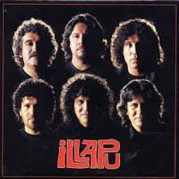
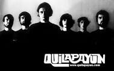

Illapu
Es un reconocido grupo chileno de música de raíz folclórica andina, fundado en 1971 en la ciudad de Antofagasta, Región de Antofagasta. El nombre -Illapu- viene del idioma quechua y significa «rayo» o «relámpago».Plantilla:Illapu.cl/historia/ En sus primeros discos el grupo se caracterizaba por el rescate de instrumentos, melodías y líricas relacionadas con la cultura andina. Musicalmente, Illapu, comenzó explorando temáticas folclóricas derivadas de expresiones autóctonas andinas: música andina y folclore latinoamericano, desarrollando finalmente una fusión de estilos que mezclan el jazz y el rock, entre otros géneros. La lírica o temática de sus canciones ha conjugado desde los aspectos más puros de la música andina, donde no solo han interpretado temas del repertorio tradicional, sino que han evolucionado a la composición instrumental donde destacan por la complejidad de sus obras y su ejecución. En sus canciones destacan aspectos sociales, políticos y culturales, y cada álbum se ha convertido en una radiografía del momento y presente desde la perspectiva popular. Así han resaltado los problemas sociales y políticos de la dictadura y de la transición democrática chilena, proponiendo soluciones y a veces hasta siendo premonitorios. Ésta es una de las claves que explican el largo éxito del conjunto y su arrastre con gentes de todo el mundo, especialmente de América Latina.


Quilapayún
Fue formada en Santiago el 26 de julio de 1965 por Julio Carrasco y Julio Numhauser, quienes invitaron en un primer momento al hermano del primero, Eduardo Carrasco, quien se suponía sería sólo un intérprete temporal.2 Así el trío inicial decide llamarse «Quilapayún», que en mapudungun significa «Tres barbas». Comienzan a realizar esporádicas presentaciones en peñas universitarias, y posteriormente deciden integrar a Patricio Castillo (su presencia intermitente duraría hasta 1970) y más tarde, en forma definitiva, a Carlos Quezada, Willy Oddó, Hernán Gómez y Rodolfo Parada. Luego de trabajar un breve lapso con Ángel Parra y de tener sus primeras actuaciones en peñas de Valparaíso y Santiago, Quilapayún integra como director artístico a Víctor Jara, con quien adoptarán el modo interpretativo y escénico que los volvería célebres junto a sus barbas y ponchos negros. Después de dos discos en los que esbozaron su línea temática y musical, graban en 1968 el LP X Vietnam en el que adoptan el estilo que los volverá un paradigma de la canción popular revolucionaria. En 1970 graban la Cantata de Santa María de Iquique, de Luis Advis, que se vuelve una obra esencial de la música chilena y modelo para trabajos del mismo tipo que se realizaron en Hispanoamérica. Durante el gobierno de Salvador Allende son nombrados embajadores culturales, realizando giras por Europa y obteniendo un gran éxito en Argentina y Uruguay. En esa época alternan canciones y obras de apoyo decidido a la causa de la Unidad Popular y de ataque a los sectores conservadores con trabajos como «Quilapayún 5», donde esbozan nuevos caminos creativos, marcados por el ingreso de su director, Eduardo Carrasco, al conservatorio- Música clásica
- Blues
- Jazz
- Rhythm and Blues R y B
- Rock and Roll
- Gospel
- Soul
- Rock
- Metal
- Country
- Funk
- Disco
- House
- Techno
- Pop
- Ska
- Reggae
- Hip Hop
- Drum and bass